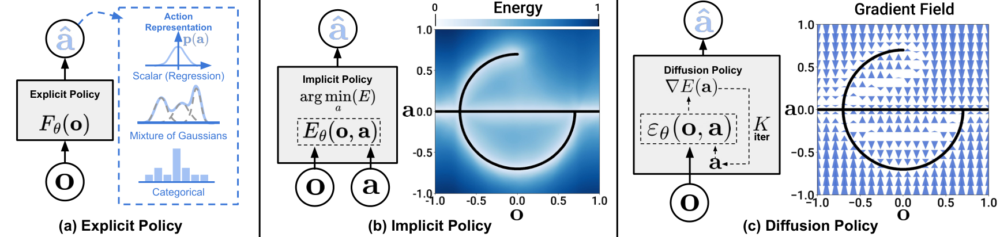
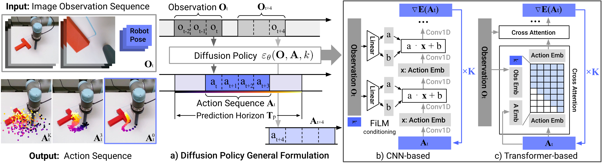
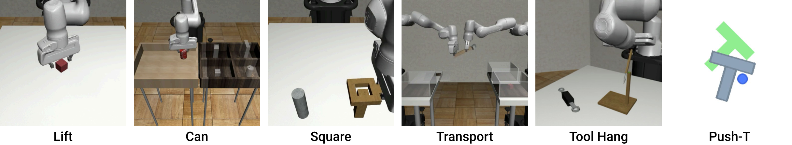
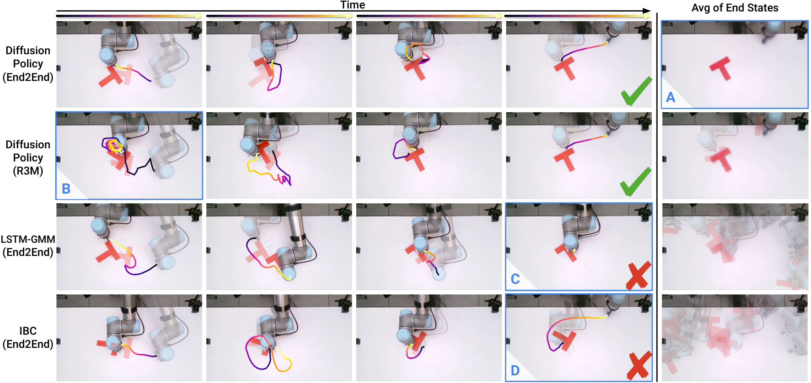
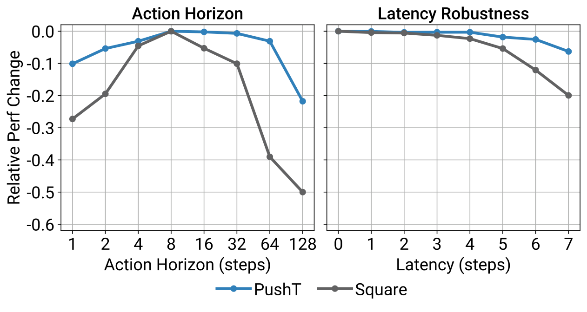

P1. Diffusion Policy: Visuomotor Policy Learning via Action Diffusion¶
0. 읽기 전 약어 및 핵심 용어¶
이 문서를 읽기 전에 아래 약어와 용어를 먼저 정리한다. 이후 본문에서는 괄호 안의 약어를 사용한다.
- Vision-Language-Action (VLA): 시각 관측과 언어 명령을 함께 받아 로봇 action까지 생성하는 모델 또는 학습 패러다임이다.
- Behavior Cloning (BC): expert demonstration의 observation-action pair를 supervised learning으로 모방하는 imitation learning 방법이다.
- Multi-Layer Perceptron (MLP): fully connected layer를 여러 층 쌓은 feed-forward neural network이다.
- Convolutional Neural Network (CNN): convolution 연산으로 image나 spatial feature를 처리하는 neural network이다.
- Long Short-Term Memory (LSTM): sequence의 장기 의존성을 다루기 위해 gate 구조를 사용하는 recurrent neural network이다.
- Long Short-Term Memory Gaussian Mixture Model (LSTM-GMM): LSTM sequence model이 Gaussian mixture distribution의 parameter를 예측하는 policy 표현이다.
- Denoising Diffusion Probabilistic Model (DDPM): noise를 점진적으로 제거하는 reverse process를 학습하는 diffusion generative model이다.
- Denoising Diffusion Implicit Model (DDIM): DDPM보다 빠른 deterministic 또는 semi-deterministic sampling을 가능하게 하는 diffusion sampler이다.
- Mean Squared Error (MSE): 예측값과 정답의 차이를 제곱해 평균한 regression loss이다.
- Robotics Transformer (RT): robot observation을 입력받아 action을 예측하는 transformer 기반 robot policy 계열을 뜻한다.
- Robotics Transformer 2 (RT-2): web-scale vision-language knowledge와 robot trajectory를 함께 학습해 action token을 생성하는 VLA 모델이다.
- Robotics Diffusion Transformer (RDT): diffusion model과 transformer를 결합해 robot action trajectory를 생성하는 robot foundation policy 계열이다.
- Robotics Diffusion Transformer 1B (RDT-1B): 약 1B parameter 규모의 bimanual manipulation diffusion foundation model이다.
- Physical Intelligence pi-zero model (pi0): Physical Intelligence가 제안한 general robot control용 vision-language-action flow model이다.
- International Journal of Robotics Research (IJRR): robotics 분야의 대표 학술지다.
1. Metadata¶
| Field | 내용 |
|---|---|
| ID | P1 |
| Title | Diffusion Policy: Visuomotor Policy Learning via Action Diffusion |
| Authors | Cheng Chi, Zhenjia Xu, Siyuan Feng, Eric Cousineau et al. |
| Affiliation / Team | Columbia University / Toyota Research Institute / MIT |
| Venue / Status | RSS 2023; IJRR 2025 |
| Date | 2023-03-07 |
| Link | https://arxiv.org/abs/2303.04137 |
| Local source | paper_corpus/sources/P1 |
| Source figures | paper_corpus/figures_source/P1/manifest.md |
2. 핵심 요약¶
Diffusion Policy는 robot visuomotor policy를 conditional denoising diffusion process로 표현하는 논문이다. observation을 조건으로 action sequence를 Gaussian noise에서 점진적으로 denoise하여 생성하고, receding horizon control로 일부 action만 실행한 뒤 다시 replanning한다.
VLA 계열이 action을 discrete token으로 생성한다면, Diffusion Policy는 continuous action distribution 자체를 expressive generative model로 다룬다. 특히 multimodal action distribution, high-dimensional action sequence, stable training이라는 세 가지 장점을 robot behavior cloning에 가져온 것이 핵심이다.
3. 왜 중요한가?¶
Diffusion Policy는 이후 robot foundation model과 VLA 연구에서 action head/action generator를 설계할 때 거의 반드시 비교되는 기준점이다.
- action을 single-step regression이 아니라 action sequence generation 문제로 바꿨다.
- multimodal action distribution을 자연스럽게 표현할 수 있다.
- receding horizon control을 결합해 temporal consistency와 responsiveness를 동시에 노렸다.
- 15개 task, 4개 benchmark에서 평균 46.9% improvement를 보고했다.
- OpenVLA 같은 autoregressive action-token VLA와 pi0 같은 flow/diffusion action model 사이의 중요한 연결고리다.
4. Policy Representation 관점¶
논문은 policy representation을 explicit policy, implicit policy, diffusion policy로 비교한다.

Figure 1. Policy representations. explicit policy는 action을 직접 예측하고, implicit policy는 energy landscape에서 낮은 energy action을 찾는다. Diffusion Policy는 learned gradient field를 따라 noise를 action으로 refine한다. Source figure: DP_teaser.pdf.
발표에서는 이 그림을 통해 다음을 설명하면 좋다.
- BC에서 action regression은 multimodal expert behavior를 평균내는 문제가 생긴다.
- implicit policy는 multimodality를 다룰 수 있지만 negative sampling 등으로 학습이 불안정할 수 있다.
- diffusion policy는 score/gradient field를 학습해 안정적으로 multimodal action을 sampling한다.
5. DDPM Denoising Process¶
Diffusion Policy는 DDPM을 robot action space에 적용한다. Gaussian noise에서 시작해 \(K\)번 denoising하여 clean action을 만든다.
| Notation | 의미 |
|---|---|
| \(\mathbf{x}^{k}\) | diffusion step \(k\)에서의 noisy sample |
| \(\mathbf{x}^{k-1}\) | 한 단계 denoising 후 sample |
| \(\mathbf{x}^{0}\) | 최종 noise-free output |
| \(K\) | 전체 denoising iteration 수 |
| \(\epsilon_{\theta}\) | noise prediction network |
| \(\theta\) | noise prediction network parameter |
| \(\alpha,\gamma,\sigma\) | denoising/noise schedule 관련 계수 |
| \(\mathcal{N}(0,\sigma^2 I)\) | 각 step에서 추가되는 Gaussian noise |
이 수식은 diffusion sampling을 noisy gradient descent처럼 볼 수 있음을 보여준다. 논문은 \(\epsilon_{\theta}\)가 action score/energy landscape의 gradient field를 예측한다고 해석한다.
6. Gradient Descent 해석¶
논문은 denoising step을 noisy gradient descent와 연결한다.
| Notation | 의미 |
|---|---|
| \(\mathbf{x}\) | 현재 sample 또는 action candidate |
| \(\mathbf{x}^{\prime}\) | gradient step 이후 sample |
| \(E(\mathbf{x})\) | energy function |
| \(\nabla E(\mathbf{x})\) | energy landscape의 gradient |
| \(\gamma\) | step size 또는 learning rate |
Diffusion Policy에서는 \(\epsilon_{\theta}(\mathbf{x}, k)\)가 \(\nabla E(\mathbf{x})\)에 해당하는 방향을 학습한다고 볼 수 있다. 즉, policy는 action을 직접 회귀하는 것이 아니라 “좋은 action 쪽으로 어떻게 denoise할 것인가”를 학습한다.
7. DDPM Training Loss¶
DDPM training은 clean sample에 noise를 더한 뒤, 그 noise를 맞히도록 학습한다.
| Notation | 의미 |
|---|---|
| \(\mathcal{L}\) | diffusion noise prediction loss |
| \(\mathbf{x}^{0}\) | dataset에서 나온 clean sample |
| \(\boldsymbol{\epsilon}^{k}\) | diffusion step \(k\)에 해당하는 sampled noise |
| \(\epsilon_{\theta}\) | noise prediction network |
| \(k\) | denoising iteration index |
| \(\mathrm{MSE}\) | predicted noise와 true noise 사이의 mean squared error |
이 loss의 장점은 implicit policy처럼 negative sampling으로 normalization constant를 다루지 않아도 된다는 점이다. 따라서 multimodal distribution을 표현하면서도 학습 안정성이 좋다.
8. Diffusion Policy Formulation¶
robot control에서는 output sample \(\mathbf{x}\)가 image가 아니라 future action sequence \(\mathbf{A}_t\)가 된다. 또한 denoising은 observation \(\mathbf{O}_t\)에 조건화된다.

Figure 2. Diffusion Policy overview. policy는 최근 $T_o$ step observation을 입력으로 받고, $T_a$ step action을 실행한다. CNN version은 FiLM conditioning을 사용하고, Transformer version은 observation embedding에 cross-attention한다. Source figure: policy_input_output.pdf.
conditional denoising process는 다음과 같다.
| Notation | 의미 |
|---|---|
| \(\mathbf{A}^{k}_{t}\) | timestep \(t\)에서 diffusion step \(k\)의 noisy future action sequence |
| \(\mathbf{A}^{k-1}_{t}\) | 한 단계 denoising된 action sequence |
| \(\mathbf{O}_{t}\) | 최근 observation history |
| \(\epsilon_{\theta}(\mathbf{O}_{t},\mathbf{A}^{k}_{t},k)\) | observation과 noisy action sequence를 조건으로 noise/gradient를 예측하는 network |
| \(\alpha,\gamma,\sigma\) | diffusion noise schedule 계수 |
| \(\mathcal{N}(0,\sigma^2 I)\) | sampling 과정에서 추가되는 Gaussian noise |
training loss도 observation-conditioned 형태로 바뀐다.
| Notation | 의미 |
|---|---|
| \(\mathbf{A}^{0}_{t}\) | demonstration에서 나온 clean future action sequence |
| \(\boldsymbol{\epsilon}^{k}\) | diffusion step \(k\)에서 더한 noise |
| \(\mathbf{O}_{t}\) | observation condition |
| \(\epsilon_{\theta}\) | noise prediction network |
| \(\mathcal{L}\) | conditional action diffusion training loss |
이 수식은 Diffusion Policy가 미래 state를 생성하지 않고, observation을 condition으로 action sequence만 생성한다는 점을 보여준다. 이 선택은 real-time visuomotor control에서 inference cost를 줄이는 데 중요하다.
9. Receding Horizon Control¶
Diffusion Policy는 한 번에 \(T_p\) step action을 예측하지만, 그중 \(T_a\) step만 실행하고 다시 observation을 받아 replanning한다.
| Notation | 의미 |
|---|---|
| \(\mathbf{A}_t\) | timestep \(t\)에서 예측한 future action sequence |
| \(T_p\) | action prediction horizon |
| \(T_a\) | action execution horizon |
| \(a_t\) | timestep \(t\)의 action |
| \(\mathrm{execute}\) | 예측된 action sequence 중 일부를 실제 robot에 실행하는 과정 |
이 구조는 중요한 trade-off를 만든다.
| \(T_a\)가 작을 때 | \(T_a\)가 클 때 |
|---|---|
| observation 변화에 빠르게 반응 | temporal consistency가 좋아짐 |
| action이 jittery해질 수 있음 | unexpected change에 늦게 반응 |
| 매 step diffusion inference 필요 | inference latency를 줄일 수 있음 |
논문은 action horizon이 1보다 크면 idle demonstration이나 latency에 더 강하지만, 너무 길면 reaction time이 느려져 성능이 떨어진다고 설명한다.
10. CNN vs Transformer Diffusion Policy¶
Diffusion Policy는 noise prediction network \(\epsilon_{\theta}\)로 CNN과 Transformer를 모두 검토한다.
| Backbone | 특징 | 장점 | 한계 |
|---|---|---|---|
| CNN-based Diffusion Policy | 1D temporal CNN + FiLM conditioning | 대부분 task에서 안정적이고 hyperparameter tuning이 적음 | 빠르게 변하는 action sequence에서 over-smoothing 가능 |
| Time-series Diffusion Transformer | noisy action token + diffusion step embedding + observation cross-attention | high-frequency action change, velocity control task에 강함 | hyperparameter에 민감하고 end-to-end visual training이 어려움 |
이 비교는 이후 robot foundation model에서 action head를 설계할 때 중요하다. action generator가 단순 MLP/regression head인지, autoregressive token decoder인지, diffusion/flow model인지에 따라 temporal behavior가 크게 달라진다.
11. Evaluation 결과¶
논문은 4개 benchmark의 15개 task에서 Diffusion Policy를 평가한다.

Figure 3. Simulation benchmark tasks. Robomimic, Push-T, Multimodal Block Pushing, Franka Kitchen 등 다양한 state/image observation task에서 평가한다. Source figure: sim_task_thumbnails.pdf.
핵심 결과는 다음과 같다.
- Diffusion Policy는 state-based 및 vision-based observation 모두에서 baseline보다 일관되게 높은 성능을 보인다.
- 평균 46.9% success-rate improvement를 보고한다.
- short-horizon multimodality와 long-horizon multimodality 모두에서 강하다.
- position control action space를 잘 활용한다.
- receding horizon position control 덕분에 latency에 강하다.
real-world evaluation도 여러 manipulation task에서 수행된다.

Figure 4. Real-world results. UR5/Franka robot에서 Push-T, mug flipping, sauce pouring/spreading 등 실제 manipulation task를 평가한다. Source figure: real_results.pdf.
12. Ablation과 Design Takeaways¶

Figure 5. Ablation results. action horizon, latency, observation horizon 등 Diffusion Policy 설계 요소가 성능에 미치는 영향을 분석한다. Source figure: ablation_figure.pdf.
핵심 design takeaway는 다음과 같다.
| Design factor | 핵심 메시지 |
|---|---|
| Action horizon | 너무 짧으면 jittery, 너무 길면 reaction이 느려진다. |
| Position control | Diffusion Policy는 position control에서 특히 강하다. |
| Visual conditioning | observation을 output으로 생성하지 않고 condition으로만 사용해 inference cost를 줄인다. |
| End-to-end vision | real task에서는 frozen pretrained feature보다 end-to-end trained visual encoder가 더 효과적이었다고 보고한다. |
| Inference iterations | real-world task에서는 DDIM으로 denoising step을 줄여 latency를 낮춘다. |
13. VLA / pi0 계열과의 연결¶
| 흐름 | Diffusion Policy와의 연결 |
|---|---|
OpenVLA (D5) |
action을 discrete token으로 생성하는 VLA. Diffusion Policy는 continuous action sequence를 diffusion으로 생성 |
Diffusion-VLA (V2) |
VLA reasoning과 diffusion action generation을 결합하려는 후속 흐름 |
CogACT (V1) |
cognition/action module을 분리하고 action module에서 diffusion-style modeling을 사용 |
pi0 (P4) |
VLA backbone과 flow matching action generation을 결합하는 general robot control model |
3D Diffusion Policy (P2) |
3D representation을 Diffusion Policy에 결합해 generalization을 개선 |
RDT-1B (P3) |
diffusion foundation model을 bimanual manipulation으로 scale |
Diffusion Policy는 VLA와 직접 경쟁한다기보다, VLA의 action head를 어떻게 설계할 것인가에 대한 다른 답변을 제공한다. 특히 precise control과 multimodal continuous action에서는 diffusion/flow 계열이 강력한 대안이 된다.
14. World Model 관점에서의 위치¶
Diffusion Policy는 world model이 아니다. 미래 observation이나 environment dynamics를 생성하지 않고, observation-conditioned action distribution만 생성한다. 하지만 world model 스터디에서 중요한 이유는 다음과 같다.
| 관점 | Diffusion Policy의 의미 |
|---|---|
| action generative model | action distribution을 expressive generative model로 다룬다. |
| implicit optimization | denoising 과정을 action-space optimization으로 해석할 수 있다. |
| closed-loop control | receding horizon으로 reactive control과 temporal consistency를 결합한다. |
| no future state prediction | world dynamics를 모델링하지 않으므로 model-based planning과는 다르다. |
| 후속 확장 | flow/diffusion action model과 VLA/world model을 결합하는 연구의 기반이 된다. |
따라서 Diffusion Policy는 world model 자체보다 “action world를 생성하는 policy model”로 읽는 것이 적절하다.
15. 한계¶
| 한계 | 의미 |
|---|---|
| behavior cloning 한계 | demonstration quality/quantity가 부족하면 성능이 제한된다. |
| inference cost | diffusion sampling은 LSTM-GMM 같은 단순 policy보다 계산 비용과 latency가 크다. |
| high-frequency control | denoising step 수가 많으면 빠른 control frequency에 부담이 된다. |
| task-specific training | foundation-scale multi-robot policy라기보다 task별 behavior cloning setting 중심이다. |
| language grounding 부재 | OpenVLA/pi0처럼 large language instruction generalization을 직접 다루지는 않는다. |
논문은 diffusion acceleration, better noise schedule, consistency model 등이 향후 inference step 감소에 중요하다고 언급한다.
16. 발표 구성 추천¶
문제의식: BC action regression은 multimodal action과 temporal consistency에 취약하다.핵심 아이디어: action을 직접 회귀하지 않고 noise에서 denoise하여 action sequence를 생성한다.수식: DDPM denoising, noise prediction loss, observation-conditioned action diffusion을 설명한다.control: \(T_o\), \(T_p\), \(T_a\)와 receding horizon control을 설명한다.architecture: CNN-based vs Transformer-based Diffusion Policy를 비교한다.실험: 15 tasks, 4 benchmarks, 46.9% improvement와 real-world task를 요약한다.연결: OpenVLA의 token action과 pi0의 flow action model 사이에서 어떤 의미인지 설명한다.
17. 발표 질문¶
- action regression이 multimodal demonstration에서 실패하는 이유는 무엇인가?
- Diffusion Policy의 denoising은 policy인가, optimizer인가, sampler인가?
- receding horizon에서 \(T_a\)를 어떻게 정해야 할까?
- VLA action token 방식과 diffusion action generation은 어떤 task에서 각각 유리할까?
- Diffusion Policy를 world model과 결합하면 어떤 장점이 생길까?
18. 요약 코멘트¶
Diffusion Policy는 robot behavior cloning에서 action representation 자체를 바꾼 논문이다. RT-2/OpenVLA가 action을 language token으로 생성하는 길을 열었다면, Diffusion Policy는 continuous action sequence를 diffusion generative model로 생성하는 길을 열었다. 이후 pi0, CogACT, Diffusion-VLA 같은 모델을 이해하려면 이 논문의 receding horizon action diffusion 관점을 반드시 잡고 넘어가는 것이 좋다.